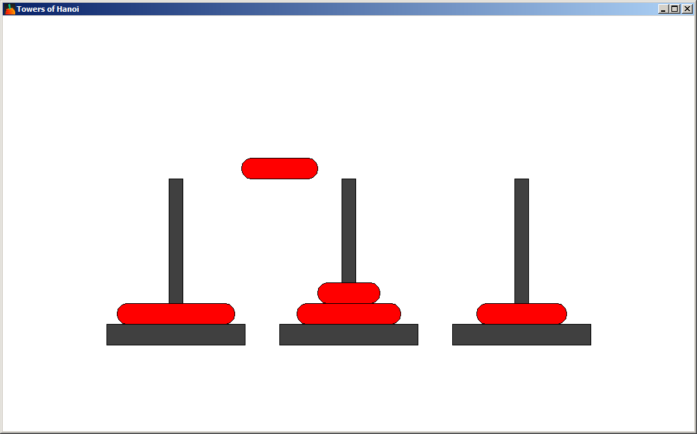

Welcome
This is a graphical solver of the Towers of Hanoi puzzle. The puzzle involves moving disks of different sizes from one stack to another, with one spare stack. Only the top disk can be removed from a stack and placed on another stack. It cannot be placed on top of a disk which is smaller than it. See Towers of Hanoi for more details.
Solving the puzzle for 5 disks